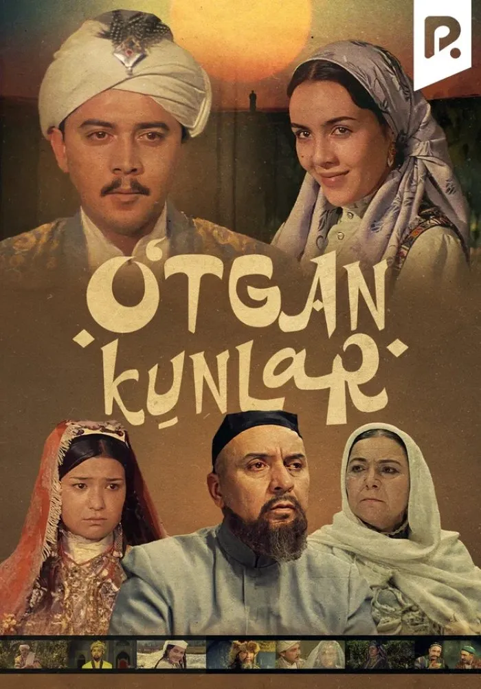
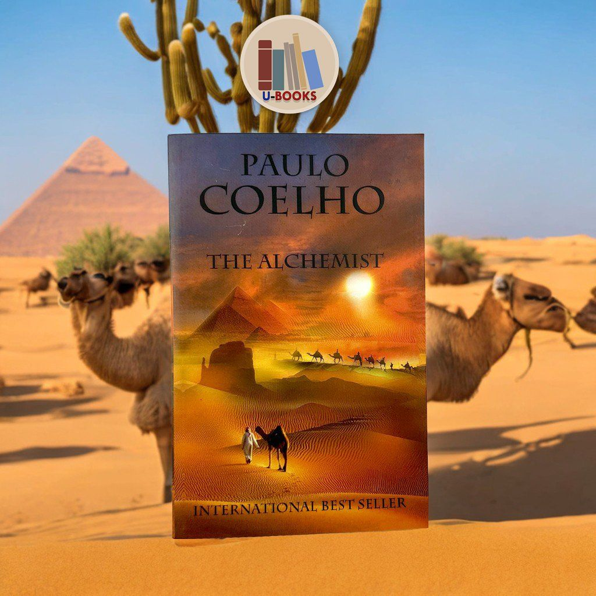

"O'tkan Kunlar" - Abdulla Qodiriy tomonidan yozilgan va o'zbek adabiyotining durdona asarlaridan biridir.

Bu kitob XIX asrdagi O'zbekistonning ijtimoiy hayotini tasvirlaydi va undagi bosh qahramonlar Orifjon va Kumushxonning sevgi hikoyasini hikoya qiladi.
"Alkimyogar" - Paulo Coelho tomonidan yozilgan va insonning o'z maqsadini topishi haqida hikoya qiluvchi bestseller kitob.

Bu kitobda bosh qahramon Santyago o'zining orzularini ro'yobga chiqarish uchun dunyo bo'ylab sayohat qiladi.
| # | Knopkalar |
|---|---|
| 1 |